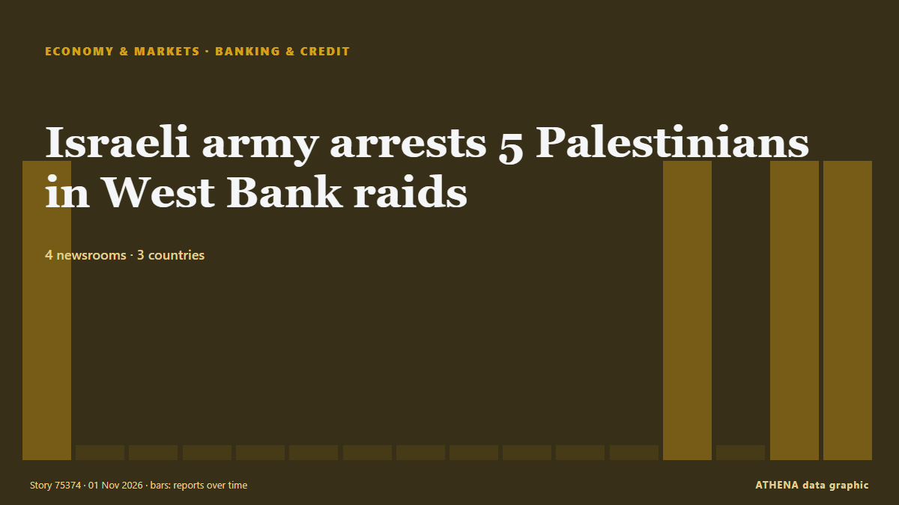

Banking & credit
| 19 Oct | 0 |
|---|---|
| 20 Oct | 0 |
| 21 Oct | 0 |
| 22 Oct | 0 |
| 23 Oct | 0 |
| 24 Oct | 0 |
| 25 Oct | 1 |
| 26 Oct | 0 |
| 27 Oct | 1 |
| 28 Oct | 4 |
| 29 Oct | 7 |
| 30 Oct | 9 |
| 31 Oct | 1 |
| 1 Nov | 0 |

Israeli army arrests 5 Palestinians in West Bank raids
Israeli forces raid homes of Palestinians in Nablus, Qalandiya refugee camp, according to Palestinian Prisoners’ Media Office. from Anadolu Agency (English)
Canada Pledges €500M Toward EU’s €90B Ukraine Loan
Canadian Prime Minister Mark Carney announced on Friday, Oct. from Kyiv Post
European Commission proposes 45 billion euros in funding for Ukraine for 2027
Of this amount, 31.7 billion euros would go toward weapons purchases. from TASS (English)
Bank of Japan's Transactions with the Government (Sept.)
Although core consumer inflation occasionally exceeded the target in the early 2020s, Friday marked the first time the Bank of Japan confirmed that its long-term inflation goal had been achieved. from Free Malaysia Today
New update on DWP benefits changes after announcement this week
There have been questions about timetables. from WalesOnline
Foreign bank branch in UAE fined Dh200 million
Dubai: The Central Bank of the UAE has imposed a financial penalty of Dh200 million on a branch of a foreign bank licensed in the UAE, pursuant to the provisions of the Federal decree law regarding… from Gulf News
Report warns of growing Caribbean demand for long-term care
WASHINGTON, United States (CMC) — The Pan American Health Organisation (PAHO) and the Inter-American Development Bank (IDB) are urging countries across the Americas to strengthen long-term care… from Jamaica Observer
UN Finds Age-Based Persecution of Palestinian Children
Palestinian children were deliberately targeted, a UN commission finds, extending its age-based persecution finding to the occupied West Bank. from TRT World
Fungus found in organic butter, woman wins Rs 1 lakh payout from shop, manufacturer
In Hyderabad, a woman discovered fungus in a packet of organic cooking butter she purchased. from Times of India
XPO’s pricing, operating initiatives drive Q3 beat
Driven by higher volumes and stronger pricing, XPO once again exceeded expectations as these factors continue to amplify the impact of its operational efficiency initiatives. from FreightWaves
Israeli army continues incursions in Hebron for 8th consecutive day amid tightened restrictions
Israeli forces raid Jilada, Ain Deir Baha neighborhoods, deploying large numbers of soldiers, local sources tell Anadolu. from Anadolu Agency (English)
Private sector benefiting from low lending rates – BoG Governor
Average lending rates in Ghana have declined from 30.25% in December 2024 to 15.7% in September 2026, while private sector credit growth has strengthened to 26.4%, according to the Governor of the… from MyJoyOnline
From Tata row to IDBI Bank sale: Rahul Gandhi vs Nirmala Sitharaman round 2
The Leader of Opposition in Lok Sabha also said “Indian business is not Modi and Shah’s plaything” from The Hindu
WA Labor MP sued for alleged $1 million unpaid loan in US
The MP is being sued in the United States Federal Court for more than $1 million. from Sydney Morning Herald
Melbourne man gives blood at all 85 donation centres across Australia
While most people who give blood might visit a handful of donation centres in their life, Trevor Bergman has gone above and beyond by donating at every blood bank in the country. from ABC News Australia
Bank of Japan to hold rates, signal further hikes
TOKYO: The Bank of Japan (BOJ) is set to keep interest rates steady on Friday but stress its focus on preventing underlying inflation from overshooting its two per cent target, suggesting scope to… from New Straits Times
Mortgage approvals fall further to lowest since 2023
Bank of England figures show 53,443 mortgages were approved for house purchases in September. from The Irish News (Belfast)